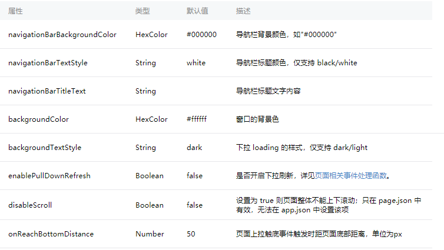

一、json配置
app.json --- 全局配置文件
** pages:[] ----- 小程序包含的所有页面，要想显示哪一个页面，必须配置它 ----- 第一个选项为默认显示的页面
** window：{} ---- 配置小程序的头部，可以设置背景颜色，字体的颜色，标题内容
tabbar: {} --- 底部选项卡 ---- 注意查看第5条
networkTimeout: {} ---网络超时选项
debug: true
pages文件夹下内部含有的json文件
局部配置文件----页面配置文件，----可以修改app.json中的配置
配置过优先选择此处的，未配置走的是app.json文件的配置

二、wxml模板
不再有div、p、span这些HTML标签，有的是view，button，text标签，
语法类似Vue，符合MVVM思想
1、数据绑定
<view>数据绑定--{{message}}</view>
data: {
message: 'hello world!hello xiaochengxu'
},
---一般在多层嵌套中会使用wx:for-item和wx:for-index
建议循环使用<block></block>标签----结构足够清晰
----- 当 wx:for 的值为字符串时，会将字符串解析成字符串数组
花括号和引号之间如果有空格，将最终被解析成为字符串
<view wx:for="{{list}}" wx:key="{{index}}">{{item}}</view>
<view wx:for="{{list}}" wx:for-item="itm" wx:for-index="idx" wx:key="{{idx}}">{{itm}}</view>
<block wx:for="{{list}}" wx:key="{{index}}">
<view>{{item}}</view>
</block>
data: {
message: 'hello world!hello xiaochengxu',
list: ['aaa','bbb','ccc']
},
3、条件渲染 --- 可以使用block标签
wx:if wx:elif wx:else
<view wx:if="{{flag}}">条件为真就显示</view>
<view wx:else>条件为假就显示</view>
data: {
message: 'hello world!hello xiaochengxu',
list: ['aaa','bbb','ccc'],
flag: false
},
wx:if vs hidden
因为 wx:if 之中的模板也可能包含数据绑定，所以当 wx:if 的条件值切换时，框架有一个局部渲染的过程，因为它会确保条件块在切换时销毁或重新渲染。
同时 wx:if 也是惰性的，如果在初始渲染条件为 false，框架什么也不做，在条件第一次变成真的时候才开始局部渲染。
相比之下，hidden 就简单的多，组件始终会被渲染，只是简单的控制显示与隐藏。
一般来说，wx:if 有更高的切换消耗而 hidden 有更高的初始渲染消耗。因此，如果需要频繁切换的情景下，用 hidden 更好，如果在运行时条件不大可能改变则 wx:if 较好。
4、模板 ---- 数据只能采用data属性，必须添加扩展运算符----is可以使用{{}}语法
<template name='test'>
<view>
user: {{lastname}}{{firstname}}
</view>
</template>
<template is="test" data="{{...userA}}"></template>
<template is="test" data="{{...userB}}"></template>
data: {
message: 'hello world!hello xiaochengxu',
list: ['aaa','bbb','ccc'],
flag: false,
userA: {firstname:'yan',lastname:'li'},
userB: {firstname:'yu',lastname:'he'}
},
5、事件 --- 点击事件使用bindtap，无需加（），js中默认含有event事件对象
传递参数使用 data-参数名=“参数值”形式， 在js中通过this.target.dataset['参数名']得到参数值
---冒泡事件使用catch来绑定事件----catchtap
非冒泡事件既可以使用bind，也可以使用catch
<button bindtap="addCount">计数器加一</button>{{count}}

<button bindtap="addCount" data-index="{{count}}">计数器加一</button>{{count}}
console.log(event.target.dataset['index'])
三、wxss样式 --- 查看02使用gulp编译scss文件为wxss文件
具有 CSS 大部分的特性，小程序在 WXSS 也做了一些扩充和修改。
- 新增了尺寸单位。在写 CSS 样式时，开发者需要考虑到手机设备的屏幕会有不同的宽度和设备像素比，采用一些技巧来换算一些像素单位。WXSS 在底层支持新的尺寸单位 rpx ，开发者可以免去换算的烦恼，只要交给小程序底层来换算即可，由于换算采用的浮点数运算，所以运算结果会和预期结果有一点点偏差。
- 提供了全局的样式和局部样式。和前边 app.json, page.json 的概念相同，你可以写一个 app.wxss 作为全局样式，会作用于当前小程序的所有页面，局部页面样式 page.wxss 仅对当前页面生效。
- 此外 WXSS 仅支持部分 CSS 选择器

四、js逻辑交互
五、构建页面 首页----交易平台-----我的
pages文件夹处点击右键新建一个目录 home，点击右键创建一个page，输入home
pages文件夹处点击右键新建一个目录 store，点击右键创建一个page，输入store
pages文件夹处点击右键新建一个目录 user，点击右键创建一个page，输入user
此时index页面暂且不需要，我们要默认显示home，将app.json文件处pages选项第一个设置为home
配置app.json文件----添加tabbar选项----添加了iconfont组成的图标图片----resource（自己创建的）
"tabBar": {
"color": "#ccc",
"selectedColor": "#03BBD5",
"backgroundColor": "#fff",
"borderStyle": "#000",
"position": "bottom",
"list": [{
"iconPath": "resource/home.png",
"selectedIconPath": "resource/home1.png",
"pagePath": "pages/home/home",
"text": "首页"
}, {
"iconPath": "resource/store.png",
"selectedIconPath": "resource/store1.png",
"pagePath": "pages/store/store",
"text": "平台"
}, {
"iconPath": "resource/my.png",
"selectedIconPath": "resource/my1.png",
"pagePath": "pages/user/user",
"text": "我的"
}]
}